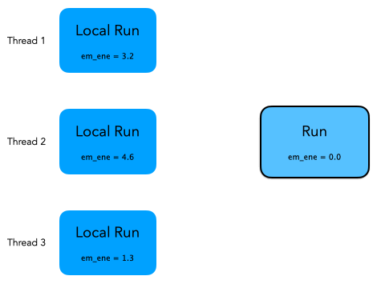
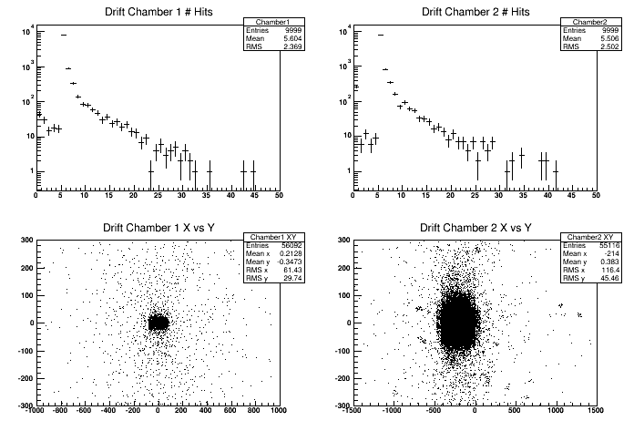
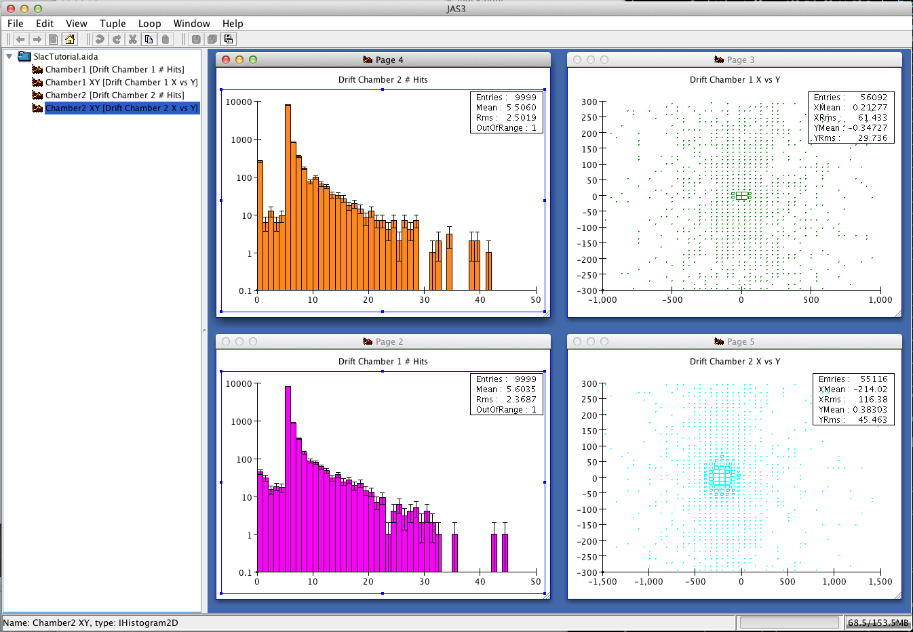
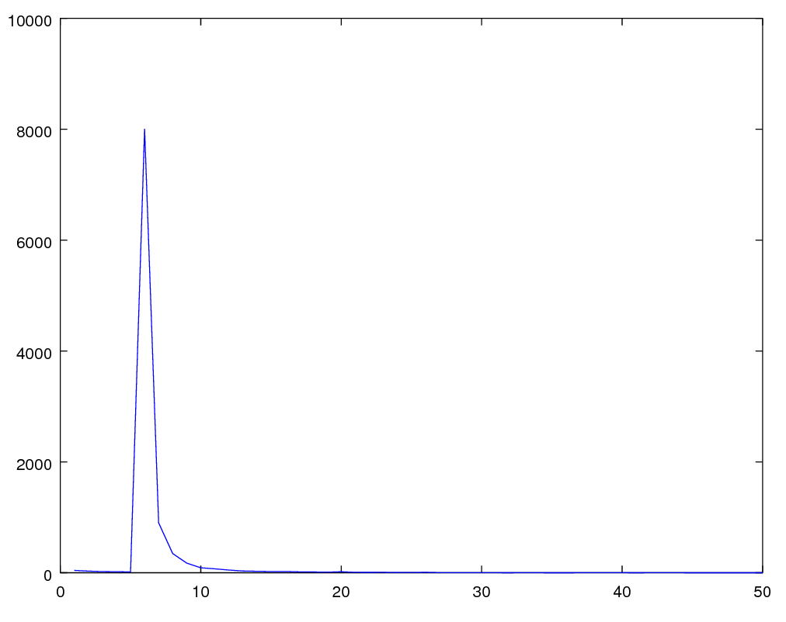
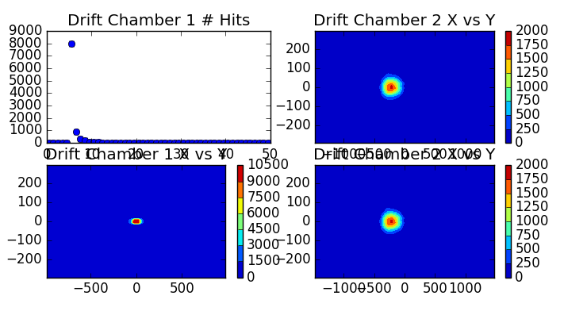

Hands on 4: First physics measurements
In this fourth hands-on you will learn:
- How to define a user run class to accumulate quantities from different
events.
- How to process this information to make a simple physics
measurement using
G4UserRunAction.
- How to store physics results on output files with
g4analysis for post-processing analysis.
- How to modify physics list using constructors.
Material:
The problem code for this hands-on session
can be downloaded
here.
For your reference, the complete solution
is also available
here.
Copy the the tar ball to your local area.
Un-tar the code, configure it with cmake, build it, and run it:
$ cd <tutorial> #change to your working directory
$ tar xzf HandsOn4-problem.tar.gz
$ cd HandsOn4-problem
$ cmake .
$ make -j 2 -f Makefile
$ ./G4tut
Note: Ignore compiler warning messages. They will disappear once you complete the exercise.
The code of this tutorial is a modified version of Geant4 example B5. You can review almost all concepts from this tutorial in the example that can be found under:
<geant4>/examples/basic/B5.
The geometry is the same as the completion of the previous hands on.
We will not modify the geometry anymore, but several sensitive
detectors and hits classes have been added to the setup.
Take a moment to look at the classes whose filenames ends with strings
SD and Hit. In particular it
is important that you understand how the calorimeter hits work.
In exercise number 2 you will calculate a very simple physics quantity (a
partial shower shape) from the energy released in calorimeters.
Geant4 does not provide/recommend specific utilities for the analysis operations
because these are strongly detector-specific.
These are compatible
with AIDA and ROOT output format and they do not require any library
installed on the system. They can also dump output in tabular form
in text files (CSV) to import data in (virtually) any analysis system
(pylab, R, Octave, Excel, Matlab,Mathematica, ...).
If you do not have an
AIDA-compliant tool nor ROOT installed, will not be
able to display histograms, but you will still be able to read data
written in CSV format.
For your interest here are some links:
Related lectures: Kernel 1, Kernel 2, Scoring 2
In Exercise 3 of Hands On 3
you have printed on screen, for each simulated event, the hits
collected in the hodoscope.
In this exercise we will show how to
accumulate some information (the energy deposited in the calorimeters)
over the entire run. We will also show how to merge
(i.e. reduce or combine) the results in a multi-threaded application.
The goal of these two exercises is to calculate the average energy
released in the electromagnetic and hadronic calorimeter and the
average partial shower shape.
A shower shape is a quantity that
describes the characteristic spatial dimensions of
particle showers in calorimeters. In this example we will calcualte
the fraction of energy released in the electromagnetic
calorimeter. An electron or gamma has the
em fraction very close to 1; a hadron will have a smaller
value of the em fraction.
-
In Exercise 1 you will modify the application to accumulate the
energy released in calorimeters in each event.
You will modify 2 files: Run.hh and
Run.cc, implementing a user-defined G4Run class.
-
In Exercise 2 you will modify the file
RunAction.cc, that implements the user defined
G4UserRunAction class, to retrieve the information
collected in the first exercise and dump on screen the results of your
data analysis: energy in calorimeters and shower shape.
During the simulation of a run an instance of a G4Run exists
and is managed by Geant4 kernel. User should extend this class to
accumulate user data.
Exercise 1 Step 1
Create a user-defined run class.
Modify the file Run.hh, a class inheriting
from G4Run: extend the class to contain the information
to be stored (of types double):
- the total energy deposited in the two calorimeters
- the accumulated shower shape
Since you will need to access hits
collections from calorimeters, add two integer data members to keep
track of the hits collection ids.
Question: what are the data members of the base class
G4Run?
Solution
File: Run.hh
class Run : public G4Run {
public:
Run();
virtual ~Run() {};
virtual void RecordEvent(const G4Event*);
virtual void Merge(const G4Run*);
G4double GetEmEnergy() const { return em_ene; }
G4double GetHadEnergy() const { return had_ene; }
G4double GetShowerShape() const { return shower_shape; }
private:
G4double em_ene; //accumulated energy in EM calo
G4double had_ene;//accumulated energy in HAD calo
G4double shower_shape;//accumulated shower shape (
f=EM/(EM+HAD) )
G4int ECHCID; //ID for EM hits collection
G4int HCHCID; //ID for HAD hits collection
Exercise 1 Step 2
Accumulate physics quantities.
Modify in file Run.cc the method
RecordEvent. This method is called by Geant4 kernel at
the end of each event passing the pointer to the current event.
Retrieve here the hits collections of both calorimeters, loop on all hits and
calculate the needed physics quantities. In the constructor of Run class
initialize the class data members to an initial value (0 for energy
and shape and -1 for ids).
Hint: Note that the initial value of -1 for hits id allows
you to be efficient in searching the hits by collection: if id==-1 you
need to search the collections, if not you already did this opeartion
and you can skip the heavy search by string.
Solution
File: Run.cc
Run::Run(): G4Run(), em_ene(0), had_ene(0), shower_shape(0) , ECHCID(-1), HCHCID(-1) { }
void Run::RecordEvent(const G4Event* evt)
{
// Forward call to base class
// This is important, can you tell why?
G4Run::RecordEvent(evt);
if ( ECHCID == -1 || HCHCID == -1) {
G4SDManager* sdManager = G4SDManager::GetSDMpointer();
ECHCID = sdManager->GetCollectionID("EMcalorimeter/EMcalorimeterColl");
HCHCID = sdManager->GetCollectionID("HadCalorimeter/HadCalorimeterColl");
}
G4HCofThisEvent* hce = evt->GetHCofThisEvent();
if (!hce) {
G4ExceptionDescription msg;
msg << "No hits collection of this event found.\n";
G4Exception("Run::RecordEvent()","Code001", JustWarning, msg);
return;
}
const EmCalorimeterHitsCollection* emHC = static_cast<const EmCalorimeterHitsCollection*>(hce->GetHC(ECHCID));
const HadCalorimeterHitsCollection* hadHC = static_cast<const HadCalorimeterHitsCollection*>(hce->GetHC(HCHCID));
if ( !emHC || !hadHC )
{
G4ExceptionDescription msg;
msg << "Some of hits collections of this event not found.\n";
G4Exception("Run::RecordEvent()","Code001", JustWarning, msg);
return;
}
G4double em = 0;
G4double had = 0;
for (size_t i=0;i<emHC->GetSize();i++)
{
EmCalorimeterHit* hit = (*emHC)[i];
em += hit->GetEdep();
}
for (size_t i=0;i<hadHC->GetSize();i++)
{
HadCalorimeterHit* hit = (*hadHC)[i];
had += hit->GetEdep();
}
had_ene += had;
em_ene += em;
if ( had+em > 0 ) //Protect agains the case had+em=0
shower_shape += ( em/(had+em) );
Exercise 1 Step 3
Implement reduction for multi-threading.
This step is optional for application without multi-thread support.
Why you need this? Remember in a multi-threaded application each
worker thread has its own instance of class G4Run.
Events are distributed and you end the simulation with many run
objects (one per worker task/thread). Geant4 provides a way to merge these
sub-runs into a single global one. This is done implementing a
Merge method in the Run class.
Geant4 kernel works in a way that the worker
threads will call the Merge method of the master run
object passing a pointer to the worker run object.
The animation below explains what is happening under the hood.
Geant4 kernel will take care of synchronizing the threads to avoid race conditions):

Solution
File: Run.cc
void Run::Merge(const G4Run* aRun)
{
const Run* localRun = static_cast<const Run*>(aRun);
em_ene += localRun->GetEmEnergy();
had_ene += localRun->GetHadEnergy();
shower_shape += localRun->GetShowerShape();
// Forward call to base-class
// This is important, can you tell why?
G4Run::Merge(localRun);
}
Exercise 1 Step 4
Create an instance of user-defined run class at each new run.
Now that you have extended G4Run you need to tell
Geant4 kernel to use it instead of the default one. To do so you need
to modify the method RunAction::GenerateRun and return an instance of
Run instead of the default (this method is called by
Geant4 at the beginning of each run). The method is already implemented in
RunAction.cc file.
Solution
File: RunAction.cc
G4Run* RunAction::GenerateRun() {
return new Run;
}
Exercise 2
Calculate physics quantities and print them on screen.
Now that Run class has been modified to include user
data we can print out the summary of our simple data analysis at the end of the
run.
To do that we modify the method EndOfRunAction of
the RunAction class (RunAction.cc file).
Retrieve from the run object the information you need and calculate the average
energy release in calorimeters and the shower shape.
Hint 1: Note that Geant4 will pass you an object of type
G4Run (the base class). You need to make an appropriate cast to
access your data.
Hint 2: The total number of events is a data member of base
class G4Run. Check in online documentation how to get
it.
Hint 3: The quantity have been stored in Geant4 natural
units. A useful function G4BestUnit can be used to print
on screen a variable with a dimension. For example:
G4double someValue = 0.001*GeV;
G4cout<< G4BestUnit( someValue , "Energy" )<<G4endl; //Will print "1 MeV"
Solution
File: RunAction.cc
void RunAction::EndOfRunAction(const G4Run* run)
{
const Run* myrun = dynamic_cast<const Run*>(run);
if ( myrun )
{
G4int nEvents = myrun->GetNumberOfEvent();
if ( nEvents < 1 )
{
G4ExceptionDescription msg;
msg << "Run consists of 0 events";
G4Exception("RunAction::EndOfRunAction()","Code001", JustWarning, msg);
}
G4double em_ene = myrun->GetEmEnergy();
G4double had_ene = myrun->GetHadEnergy();
G4double shower_shape = myrun->GetShowerShape();
G4int safety = ( nEvents > 0 ? nEvents : 1);//To avoid divisions by zero
G4cout<<"Run["<<myrun->GetRunID()<<"] With: "<<nEvents<<"Events\n"
<<" <E_em>="<<G4BestUnit(em_ene/safety,"Energy")<<"\n"
<<" <E_had>="<<G4BestUnit(had_ene/safety,"Energy")<<"\n"
<<" <E>="<<G4BestUnit((em_ene+had_ene)/safety,"Energy")<<"\n"
<<" <ShowerShape>="<<shower_shape/safety<<G4endl;
} else {
G4ExceptionDescription msg;
msg << "Run is not of correct type, skipping analysis";
G4Exception("RunAction::EndOfRunAction()","Code001", JustWarning, msg);
}
Related lectures: Kernel 2, Analysis
In these exercises we will use G4AnalysisManager to
store in ntuples and histograms the content of hits collections.
The goal of the g4analysis module is to provide
light-weight support for simple storage of data.
We show below four different ways to visualize the histograms produced by g4analysis.
1. Using ROOT
You can use the provided plot.C
to display the histograms produced by g4analysis by typing on a terminal:
The plotting script relies on the histogram names and file to be the one
produced by the solution of this exercise.
root -l plot.C
root[0] #Type ".q" to exit root

2. Using an AIDA-compliant tool
example in JAS3:

3. Using matlab/octave
You can plot the 1D histograms from this tutorial with the following commands:
data=readcsv("Tutorial_h1_Chamber1.csv")
x=(1:50)
y=data(9:58,2)
plot(x,y)

4. Using matplotlib
You can use the provided plot_histofiles.py
to display the CSV histograms produced by g4analysis .

For this tutorial both the VM and the docker image have installed ROOT system (not matplotlib or
octave), so we use this as the default format.
Histogrames:
G4analysis Histograms are automatically merged from all worker threads, with the concept similar to what shown in HandsOn 3.
- ROOT, XML: histograms are merged in a single file named
Tutorial.[root|xml]
- CSV: histograms are written in separate files named
Tutorial_h{1,2}_{name}.csv
Ntuples:
For ntuples it makes not much sense to do the automatic merging, because what you will do for analysis is to process one file
after the other.
- ROOT:
TChain
- AIDA:
ITupleFactory::createChained
- CSV:
cat *_t*.csv > merged.csv
For ntuples the file name is:
Tutorial_t*.[root|xml], for CSV the name is:
Tutorial_nt_[ntupleName]_t*.csv.
Exercise 3 Step 1
Define content of the output file(s).
Create output file(s) and define their content: four histograms and
one nutple.
- First histogram: number of hits in first arm drift-chambers.
- Second histogram: number of hits in second arm
drift-chambers.
- Third histogram: 2D histo containing X vs Y of all hits in
first arm drift chamber.
- Foruth histogram: 2D histo containing X vs Y of all hits in
second arm drift chamber.
- One ntuple containing the following data:
- Integer column: number of hits in first drift chamber
- Integer column: number of hits in second drift chamber
- Double column: energy in electromagnetic
calorimeter
- Double column: energy in hadronic calorimeter
- Double column: time on first hodscope (whatever time if
multiple hits)
- Double column: time on second hodosope (whatever time if
multiple hits)
Solution
File: RunAction.cc
RunAction::RunAction() : G4UserRunAction()
{
// Create analysis manager
// Create analysis manager, set output format and file name
auto analysisManager = G4AnalysisManager::Instance();
// Default settings
analysisManager->SetDefaultFileType("root");
G4cout << "Using " << analysisManager->GetType() << G4endl;
analysisManager->SetVerboseLevel(1);
analysisManager->SetFileName("Tutorial");
// Book histograms, ntuple
//
// Creating 1D histograms
analysisManager->CreateH1("Chamber1","Drift Chamber 1 # Hits", 50, 0., 50); // h1 Id = 0
analysisManager->CreateH1("Chamber2","Drift Chamber 2 # Hits", 50, 0., 50); // h1 Id = 1
// Creating 2D histograms
analysisManager->CreateH2("Chamber1_XY","Drift Chamber 1 X vs Y",50, -1000., 1000, 50, -300., 300.); // h2 Id = 0
analysisManager->CreateH2("Chamber2_XY","Drift Chamber 2 X vs Y",50, -1500., 1500, 50, -300., 300.); // h2 Id = 1
// Creating ntuple
//
analysisManager->CreateNtuple("Tutorial", "Hits");
analysisManager->CreateNtupleIColumn("Dc1Hits"); // column Id = 0
analysisManager->CreateNtupleIColumn("Dc2Hits"); // column Id = 1
analysisManager->CreateNtupleDColumn("ECEnergy"); // column Id = 2
analysisManager->CreateNtupleDColumn("HCEnergy"); // column Id = 3
analysisManager->CreateNtupleDColumn("Time1"); // column Id = 4
analysisManager->CreateNtupleDColumn("Time2"); // column Id = 5
analysisManager->FinishNtuple(); //Do not forget this line!
}
Note: We book histograms and define the nutple in the constructor of the
G4UserRunAction class, however you should note that this
class is instantiated only once per job, even if multiple runs are
simulated. This means that you cannot change the content of the output
file between runs. If you think that you will do that, you can book
histograms and define columns in the ntuple in the
BeginOfRunAction method.
Exercise 3 Step 2
Open the output file at each new run.
Defining an output file and its content is not enough, you need
to explicitly open it. The best way to do so is to open it at the
beginning of a new run.
In more complex setups where you will perform
more than one run per job, you can change the file
name at each new run (e.g. via UI commands or append the run number to
the file name), so you can produce one file output for each run.
Solution
File: RunAction.cc
void RunAction::BeginOfRunAction(const G4Run* /*run*/)
{
// Get analysis manager
// Create analysis manager
G4AnalysisManager* analysisManager = G4AnalysisManager::Instance();
// Open an output file
// The default file name is set in RunAction::RunAction(),
// it can be overwritten in a macro
analysisManager->OpenFile();
}
Exercise 3 Step 3
Write out the file.
Output files must be explicitly written to disk and closed. It is a
good idea to do that at the end of the run.
Solution
File: RunAction.cc
void RunAction::EndOfRunAction(const G4Run* run)
{
const Run* myrun = dynamic_cast<const Run*>(run);
if ( myrun )
{
G4int nEvents = myrun->GetNumberOfEvent();
if ( nEvents < 1 )
{
G4ExceptionDescription msg;
msg << "Run consists of 0 events";
G4Exception("RunAction::EndOfRunAction()", "Code001", JustWarning, msg);
nEvents=1;
}
G4double em_ene = myrun->GetEmEnergy();
G4double had_ene = myrun->GetHadEnergy();
G4double shower_shape = myrun->GetShowerShape();
G4int safety = ( nEvents > 0 ? nEvents : 1);//To avoid divisions by zero
G4cout<<"Run["<<myrun->GetRunID()<<"] With: "<<nEvents<<"Events\n"
<<" <E_em>="<<G4BestUnit(em_ene/safety,"Energy")<<"\n"
<<" <E_had>="<<G4BestUnit(had_ene/safety,"Energy")<<"\n"
<<" <E>="<<G4BestUnit((em_ene+had_ene)/safety,"Energy")<<"\n"
<<" <ShowerShape>="<<shower_shape/safety<<G4endl;
} else {
G4ExceptionDescription msg;
msg << "Run is not of correct type, skypping analysis via RunAction";
G4Exception("RunAction::EndOfRunAction()","Code001", JustWarning, msg);
}
//=================================
// Exercise 3 Step 3:
// Write and close output file
// save histograms & ntuple
//
G4AnalysisManager* analysisManager = G4AnalysisManager::Instance();
analysisManager->Write();
analysisManager->CloseFile();
}
Exercise 3 Step 4
Fill histograms and ntuple with data.
At the end of each event you should retrieve informaiton from hits
collection and fill the histograms and ntuple objects.
You can access filled hits at the end of each event in
EventAction class.
Solution
File: EventAction.cc
#include "G4AnalysisManager.hh"
void EventAction::EndOfEventAction(const G4Event* event)
{
G4HCofThisEvent* hce = event->GetHCofThisEvent();
if (!hce)
{
G4ExceptionDescription msg;
msg << "No hits collection of this event found.\n";
G4Exception("EventAction::EndOfEventAction()","Code001", JustWarning, msg);
return;
}
// Get hits collections
HodoscopeHitsCollection* hHC1 = static_cast<HodoscopeHitsCollection*>(hce->GetHC(fHHC1ID));
HodoscopeHitsCollection* hHC2 = static_cast<HodoscopeHitsCollection*>(hce->GetHC(fHHC2ID));
DriftChamberHitsCollection* dHC1 = static_cast<DriftChamberHitsCollection*>(hce->GetHC(fDHC1ID));
DriftChamberHitsCollection* dHC2 = static_cast<DriftChamberHitsCollection*>(hce->GetHC(fDHC2ID));
EmCalorimeterHitsCollection* ecHC = static_cast<EmCalorimeterHitsCollection*>(hce->GetHC(fECHCID));
HadCalorimeterHitsCollection* hcHC = static_cast<HadCalorimeterHitsCollection*>(hce->GetHC(fHCHCID));
if ( (!hHC1) || (!hHC2) || (!dHC1) || (!dHC2) || (!ecHC) || (!hcHC) )
{
G4ExceptionDescription msg;
msg << "Some of hits collections of this event not found.\n";
G4Exception("EventAction::EndOfEventAction()","Code001", JustWarning, msg);
return;
}
//
// Fill histograms & ntuple
//
//=================================
// Exercise 3 Step 4:
// Fill histograms & ntuple
// Get analysis manager
G4AnalysisManager* analysisManager = G4AnalysisManager::Instance();
// Fill histograms
G4int n_hit = dHC1->entries();
analysisManager->FillH1(0, n_hit);
for (G4int i=0;i<n_hit;i++)
{
DriftChamberHit* hit = (*dHC1)[i];
G4ThreeVector localPos = hit->GetLocalPos();
analysisManager->FillH2(0, localPos.x(), localPos.y());
}
n_hit = dHC2->entries();
analysisManager->FillH1(1, n_hit);
for (G4int i=0;i<n_hit;i++)
{
DriftChamberHit* hit = (*dHC2)[i];
G4ThreeVector localPos = hit->GetLocalPos();
analysisManager->FillH2(1, localPos.x(), localPos.y());
}
// Fill ntuple
// Dc1Hits
analysisManager->FillNtupleIColumn(0, dHC1->entries());
// Dc2Hits
analysisManager->FillNtupleIColumn(1, dHC2->entries());
// ECEnergy
G4int totalEmHit = 0;
G4double totalEmE = 0.;
for (G4int i=0;i<80;i++)
{
EmCalorimeterHit* hit = (*ecHC)[i];
G4double eDep = hit->GetEdep();
if (eDep>0.)
{
totalEmHit++;
totalEmE += eDep;
}
}
analysisManager->FillNtupleDColumn(2, totalEmE);
// HCEnergy
G4int totalHadHit = 0;
G4double totalHadE = 0.;
for (G4int i=0;i<20;i++)
{
HadCalorimeterHit* hit = (*hcHC)[i];
G4double eDep = hit->GetEdep();
if (eDep>0.)
{
totalHadHit++;
totalHadE += eDep;
}
}
analysisManager->FillNtupleDColumn(3, totalHadE);
// Time 1
for (size_t i=0;i<hHC1->entries();i++)
{
analysisManager->FillNtupleDColumn(4,(*hHC1)[i]->GetTime());
}
// Time 2
for (size_t i=0;i<hHC2->entries();i++)
{
analysisManager->FillNtupleDColumn(5,(*hHC2)[i]->GetTime());
}
analysisManager->AddNtupleRow();
//
// Print diagnostics: UI command /run/printProgress can be used
// to set frequency of how often info should be dumpled
G4int printModulo = G4RunManager::GetRunManager()->GetPrintProgress();
if ( printModulo==0 || event->GetEventID() % printModulo != 0) return;
G4PrimaryParticle* primary = event->GetPrimaryVertex(0)->GetPrimary(0);
G4cout << G4endl
<< ">>> Event " << event->GetEventID() << " >>> Simulation truth : "
<< primary->GetG4code()->GetParticleName()
<< " " << primary->GetMomentum() << G4endl;
// Hodoscope 1
n_hit = hHC1->entries();
G4cout << "Hodoscope 1 has " << n_hit << " hits." << G4endl;
for (G4int i=0;i<n_hit;i++)
{
HodoscopeHit* hit = (*hHC1)[i];
hit->Print();
}
// Hodoscope 2
n_hit = hHC2->entries();
G4cout << "Hodoscope 2 has " << n_hit << " hits." << G4endl;
for (G4int i=0;i<n_hit;i++)
{
HodoscopeHit* hit = (*hHC2)[i];
hit->Print();
}
// Drift chamber 1
n_hit = dHC1->entries();
G4cout << "Drift Chamber 1 has " << n_hit << " hits." << G4endl;
for (G4int i2=0;i2<5;i2++)
{
for (G4int i=0;i<n_hit;i++)
{
DriftChamberHit* hit = (*dHC1)[i];
if (hit->GetLayerID()==i2) hit->Print();
}
}
// Drift chamber 2
n_hit = dHC2->entries();
G4cout << "Drift Chamber 2 has " << n_hit << " hits." << G4endl;
for (G4int i2=0;i2<5;i2++)
{
for (G4int i=0;i<n_hit;i++)
{
DriftChamberHit* hit = (*dHC2)[i];
if (hit->GetLayerID()==i2) hit->Print();
}
}
// EM calorimeter
G4cout << "EM Calorimeter has " << totalEmHit << " hits. Total Edep is "
<< totalEmE/MeV << " (MeV)" << G4endl;
// Had calorimeter
G4cout << "Hadron Calorimeter has " << totalHadHit << " hits. Total Edep is "
<< totalHadE/MeV << " (MeV)" << G4endl;
}
Exercise 3 Step 5
Select output file format.
You can select the output file format by changing the format name of SetDefaultFileType().
Currently "csv", "hdf5", "root" and "xml" are available.
Solution
File: RunAction.cc
RunAction::RunAction() : G4UserRunAction()
{
// Create analysis manager
// Create analysis manager, set output format and file name
auto analysisManager = G4AnalysisManager::Instance();
// Default settings
analysisManager->SetDefaultFileType(root");
G4cout << "Using " << analysisManager->GetType() << G4endl;
analysisManager->SetVerboseLevel(1);
analysisManager->SetFileName("Tutorial");
}
Created by:
Andrea Dotti
, May 2018
Updated by:
Makoto Asai and
Maurizio Ungaro
, February 2024